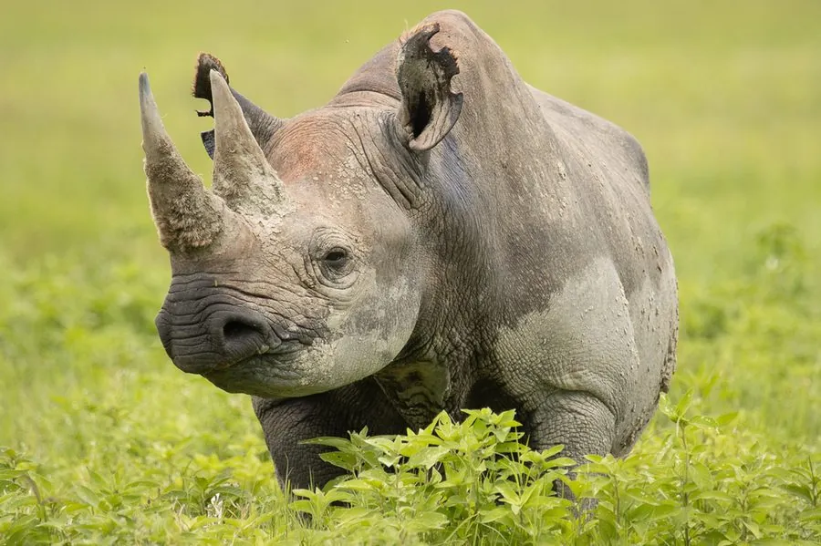

哺乳动物 · 动物界
黑犀 Diceros bicornis

非洲的两种犀牛之一，上唇尖呈钩状取食灌木嫩枝，前角长而略向后弯，因犀角盗猎被列为极危物种。
- 分类
- 门脊索动物门纲哺乳纲目奇蹄目科犀科属黑犀属
- 栖息环境
- 稀树草原、灌丛与半荒漠，偏好有灌木和零星水源的干燥地带
- 地理分布
- 非洲东部和南部，从肯尼亚、坦桑尼亚到南非、纳米比亚
- 保护级别
- IUCN 极危（CR）
物种志
黑犀体长 3–3.8 米，肩高 1.4–1.8 米，体重 800–1400 kg。它的皮肤为灰褐色，没有印度犀那样深的褶皱，上唇尖呈钩状，可以卷住灌木嫩枝；头部有两只角，前角较长，通常 0.5–1.3 米，略向后弯，雌雄都有。
黑犀分布于非洲东部和南部的稀树草原、灌丛和半荒漠，从肯尼亚、坦桑尼亚到南非、纳米比亚，栖息于有灌木和零星水源的干燥地带。它以灌木嫩叶、枝条和草本植物为食，用钩状上唇灵巧地取食细小枝叶；多在晨昏和夜间活动，独居，领地以粪便和尿液标记。黑犀视力很差，但听觉和嗅觉灵敏，奔跑时速可达 55 km/h，遇险时常直冲对手。雌兽妊娠期约 15–16 个月，每胎 1 仔。因犀角被误认为药材，黑犀在 20 世纪数量锐减超过 95%，被列为极危，全球现存约 6000 头。
形态与习性
- 食性灌木嫩叶、枝条与草本植物，用钩状上唇取食
- 体长3–3.8 m，肩高 1.4–1.8 m
- 体重800–1400 kg
- 寿命野外约 35–50 年
- 繁殖妊娠期约 15–16 个月，每胎 1 仔
- 角前角长 0.5–1.3 m，略向后弯
- 视力视力差，但听觉和嗅觉灵敏
趣味知识
- 黑犀的上唇尖呈钩状，能灵巧地卷取灌木嫩枝。
- 它视力很差，遇险时常凭听觉直冲向对手。
- 黑犀在 20 世纪因盗猎锐减超过 95%，现为极危物种。
- 犀角由角蛋白构成，并非真正的骨头。